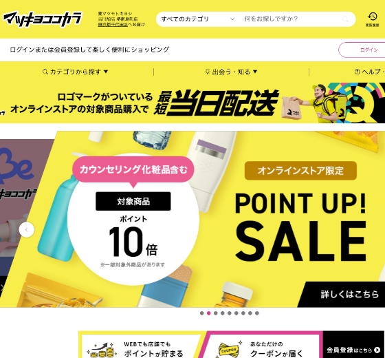
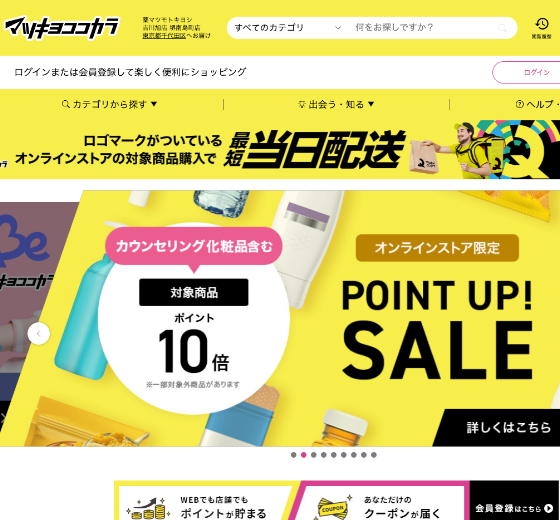
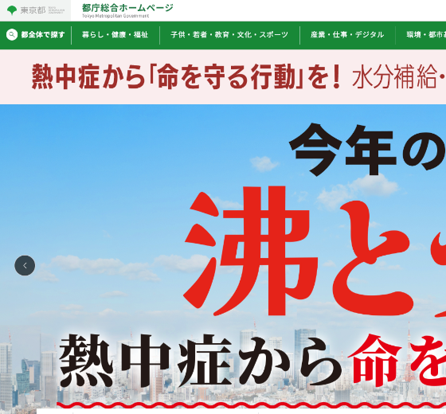
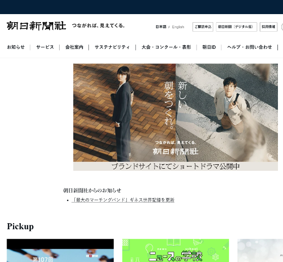
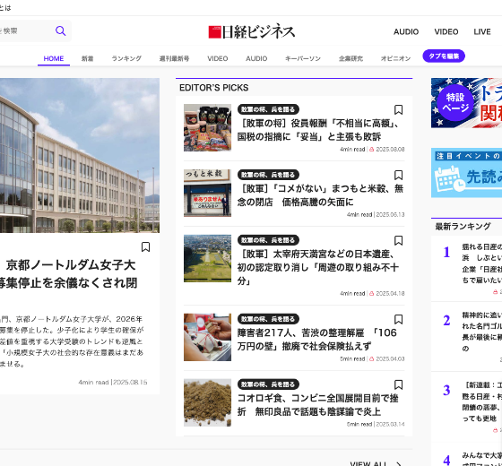
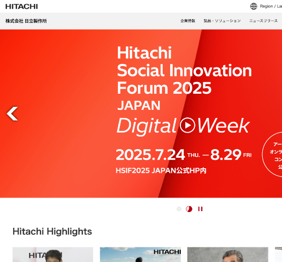
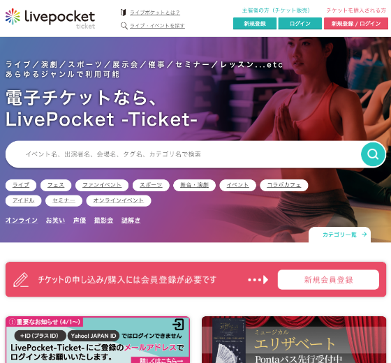
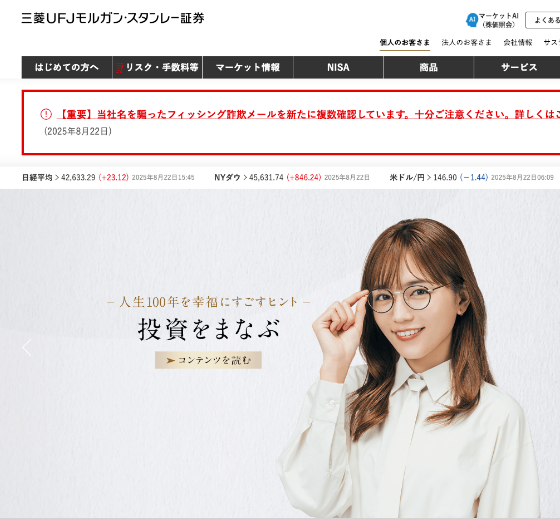

マツモトキヨシ様
eコマース設定を中心としたGA4のデータ計測基盤の構築とサイト流入を計測するためのutmパラメータの定義を担当


System Support

GA4/GTM、BigQuery、BIツール等データ計測環境および分析基盤の構築をサポートします。企画〜要件定義フェーズではお客様がデータの取り扱いについてきちんと理解されるまで寄り添います。
Project Management

データ計測基盤の構築やWeb制作における全般のプロジェクトマネジメントを担当します。ガントチャートをベースとしたタスク管理と細やかなコミュニケーションを心がけた信頼構築を得意としています。
Data&Design Analysis

定性・定量調査から課題を抽出、デザインとデータの両方の観点で具体的な改善施策案を提案します。KPI策定ではカスタマージャーニーマップの作成、ユーザーインサイトの把握を目的とした仮説検証もサポートします。

マツモトキヨシ様
eコマース設定を中心としたGA4のデータ計測基盤の構築とサイト流入を計測するためのutmパラメータの定義を担当
東宝様
アプリを含むGA4のデータ計測基盤の構築と作品サイトLP単位のGA4プロパティの新規導入およびサポート対応を含む運用支援を担当

東京都様
GA4とLooker Studioの導入支援からサイト改善施策の提案、GA4データ分析レクチャー会の講師を担当

朝日新聞社様
GA4をデータソースとしたLooker Studioの構築、ダッシュボード表示項目の提案を含むプロジェクト全般のマネジメントを担当

日経BP様
新規サイトへのGA4/GTM、BigQuery、Looker Studioの導入支援、約1年規模の案件におけるプロジェクトマネージャーを担当

日立製作所様
ダッシュボード（Looker Studio）の運用サポートとGA4を活用したデータ利活用に関する提案とお問いあわせ対応

LivePocket様
新規アプリのGA4データ計測基盤の構築と他部署対応のシステム基盤構築チームとの連携を含むプロジェクトマネジメントを担当
東急ストア様
LPページのワイヤーフレーム作成とファネル分析を含む定性調査に基づくサイト改善施策の提案を担当

三菱UFJモルガン・スタンレー証券様
コーポレートサイトのワイヤーフレーム作成とブランドイメージに沿ったサービスイメージ画像の提案を担当